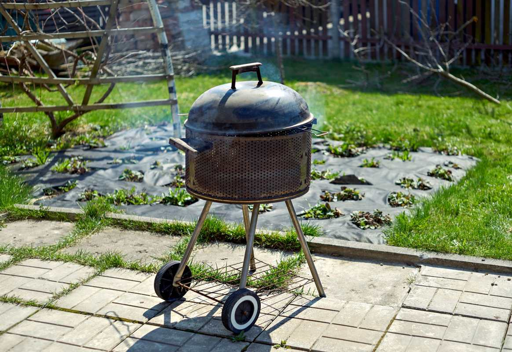

We haul old gas and charcoal grills, smokers, patio tables and chairs, umbrellas and their bases, fire pits, outdoor rugs and cushions. Most of a grill is metal, so most of it gets recycled. The one thing we will not take is the propane cylinder. Disconnect it and keep it aside, and it goes to your city's household chemical collection program.

Early fall is when a lot of these calls come in. The grill limped through one more summer, the new one is already on the patio, and the old one is sitting next to the fence.
The propane cylinder stays behind
This is the rule that matters most on a backyard job. A propane cylinder, even one that feels empty, is a pressurized container, and we do not haul it. It is a hazardous-waste item, and cylinders are on the household hazardous waste lists of the cities we work in.
McKinney, for example, lists propane cylinders for grills and camping on its household hazardous waste and e-waste page. Residents request a pickup before noon the business day before their collection day, and the actual collection date can be up to two weeks out, so it is worth scheduling early. Plano runs its own household chemical collection program, and most nearby cities have something similar.
Some cylinders can also be traded in at a retail exchange cage. Either way, the crew will ask before they touch a gas grill, and if the cylinder is still attached, they will leave it with you rather than take it off themselves.
The same goes for half-used bottles of lighter fluid, pool chemicals and bug spray from the patio cabinet. Those are household chemicals, and the city program is where they belong.
Patio furniture that lived near the water takes this harder than most. A set that spent a few summers by Lake Lewisville corrodes and fades faster than the same set inland, which is why we cover it separately on our page about hauling off weathered patio and dock furniture in Little Elm.
Before we arrive, empty the grill. Pull the cylinder off a gas grill and set it aside, and empty old ash and charcoal out of a charcoal grill or smoker once it is completely cold. A grill full of old grease and ash makes a mess of a driveway on the way out. If you are not comfortable disconnecting a gas line, have somebody who is do it first.
What else comes out of a backyard
A patio collects things the same way a garage does, just more slowly and in worse weather. The usual list on one of these jobs:
- Gas grills, charcoal grills, kettle grills and offset smokers
- Patio tables, chairs and loungers, including the ones with cracked straps
- Umbrellas and the heavy bases they sit in
- Metal fire pits and chimineas
- Outdoor rugs, weathered cushions and a deck box full of them
- Cracked planters, old hoses and a broken hose reel
- A glider or porch swing that stopped gliding years ago
If the clear-out spills into brush and branches, that is a separate stream with its own city rules, covered in brush piles, tree limbs and what the city will not collect. And if the bigger backyard pieces are going too, hot tub, shed and playset removal covers the demolition side.
Why a grill is harder for the city to take
A grill looks like a bulky item, and a lot of people assume the city's bulky pickup will take it. Often it will not, at least not with the regular bulky collection. Frisco's bulk trash pickup page is a good example. It limits bulk items to six feet in any direction and 50 pounds, and it does not accept large metal items in regular bulk pickup at all. Grills are named in Frisco's separate metal collection instead, which has to be scheduled on its own.
That is not a complaint about the city. Metal is recyclable, and routing it separately keeps it out of the landfill. The point is to read your own city's list before the grill goes to the curb, because a grill left out on the wrong day is still sitting there next week. If it already got passed over, here is what to do when the city skips your bulky trash.
The EPA's recycling basics page explains why metals are among the easiest materials to recycle. That is exactly why an old grill is one of the better items we haul for keeping material out of a landfill.
What gets recycled, donated or thrown out
Most of a grill is steel or cast aluminum, and that goes to a metal recycler. So do metal patio frames, umbrella poles, fire pits and the steel base of an old glider.
A solid metal or teak patio set in decent shape can have a second life with local donation partners. Resin chairs that have gone chalky in the sun and cushions that have been rained on for three summers usually cannot, and they are disposed of. Where your junk goes after pickup explains how that sorting works on a real job.
We are straight about this. A lot of outdoor furniture is built to last a few seasons in Texas sun, and when it is done, it is done.
How the job runs
Send a photo of the patio and the side yard, and mention whether any grill still has a cylinder attached. A crew comes out, looks at what is going, and gives you a firm number before anything is lifted. The quote is the bill, and disposal is included.
Our own crews carry it out through the side gate or the garage, keep grease off your driveway, and sweep up after. If the backyard clear-out is part of a bigger garage job, the garage cleanout checklist is a good place to start sorting before we come.
We work across the northern suburbs, including Allen, Plano, Frisco, McKinney, Prosper, Little Elm, The Colony, Richardson, Wylie and Fairview, seven days a week. Call before noon and same afternoon is typical, not guaranteed. The service page for this work is furniture removal, and you can send us a photo of the patio whenever you are ready.
Frequently asked questions
Will you take a gas grill with the propane tank attached?
We will take the grill, but not the cylinder. Disconnect it first, or the crew will leave it with you. Propane cylinders go to your city's household hazardous waste program or a retail exchange.
Do you take charcoal grills and smokers?
Yes. Kettle grills, offset smokers and ceramic cookers all go. Empty the old ash and charcoal first, and only once it is completely cold.
Can you take patio furniture that is falling apart?
Yes. Broken chairs, cracked tables, faded cushions and bent umbrellas are all fine. Pieces in good shape may be donated, and the rest is recycled or disposed of.
Will the city pick up my old grill with bulk trash?
It depends on the city. Some route metal items like grills through a separate collection program instead of regular bulky pickup, so check your city's list before you set it at the curb.
Do you take fire pits and chimineas?
Yes. Metal fire pits are recycled. Clay chimineas cannot be recycled the same way, so they are usually disposed of.
A patio cleared at the end of the season is ready for whatever comes next spring. The rest of what we haul is on the services page.